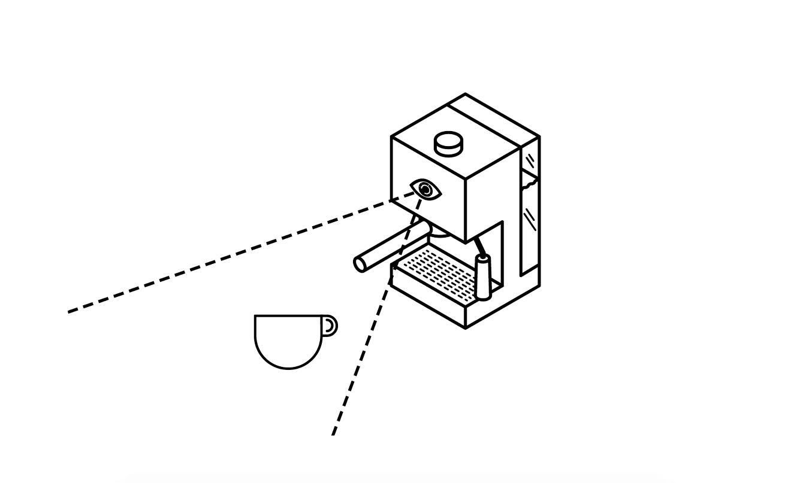

WORKSHOPS
All workshops will take place on March 19, 2019. Workshop registrations will be combined with conference registration, and admission may be dependent upon acceptance by the workshop organizers.
Making Pockets
Kristina Andersen and Angella Mackey
Many garments have pockets, some have none. Your daily agency is in some ways dictated by the presence or absence of a pocket in your clothing. In this one-day workshop participants will add or modify pockets in their own clothing, as a means of exploring notions of secrecy, power and control. The day will constitute a design research exploration into the potential that pockets serve as places for safekeeping and secrecy. Participants will be guided through adding, displacing or modifying pockets in their own brought or worn clothing, fostering a reflection on the power and potential of the modification being made. As such, we hope that this process will cast a light on the materiality, practice and power of the pocket.
Encountering Ethics in Data-Enabled RTD
Anuradha Reddy, Iohanna Nicenboim, James Pierce, Elisa Giaccardi

Building upon critical and participatory design traditions in RTD practice, and informed by thing-centered design perspectives and methods, this workshop explores the approach of doing ‘ethics through design’ that involves an active interplay among humans and “smart” things in the shaping of responsible encounters. Contemporary ethical issues in design such as trust, privacy, security, sustainability, and care will be materially engaged with and discussed throughout the workshop. Human workshop participants will engage with “smart” things as co-participants and will have the opportunity to bring their own consumer or RTD artifact to the workshop. Collectively, we will speculate and experiment with ways to engage ethics with things and generate design scenarios that critically address our responsibility in such encounters. This workshop aims to produce a refined set of methods, guidelines, and frameworks for engaging ethics and responsibility in data-enabled RTD practices that can be applied within existing IoT and IxD design, as well as explore more radical alternatives to human-centered design methods.
https://encounteringethics.cargocollective.com/
Listening to Materials – making sonic fiction with materials to co-design equitably
Jane Norris
How do we listen to materials and other beings to co-design equitably? This workshop offers guided listening / sonic activities as catalysts to reanimate our mutual relationships with materials. Through a combination of material listening exercises and narrative mapping, participants will use audio recording on mobile phones as a research-through-design methodology to consider ‘con-structing’ object narratives. By engaging sonically with ‘materials-as-co-performers’ participants are encouraged to decolonise design relationships. This workshop introduces sonic fictional design as a more-than-human approach to making through listening to materials and considering their intimate performative relationship with us.
Questions for discussion will be: In what ways can we listen to materials? How does a material’s changing sound inform our relationships to it? How can sonic fiction enable us to co-perform with materials in design? This workshop will seek to map out a nascent audio material vocabulary relevant to co-making in the Anthropocene.
Intra-action design. Unsettling design as relational practice of planetary inhabiting
Michaela Büsse
In this hands-on workshop we will reflect on and act with one of the most precious materials on earth: sand. From the microscopic level—sand being a compound of rocks eroding, and shells and plants degrading—to the global level— geological rifts caused by the reallocation of whole islands—sand is a truly planetary medium.
After inspirational inputs, covering G. Deleuze, G. Simondon, T. Ingold and J. Bennett, the rest of the day is devoted to material encounters and collaborative research aimed at collecting visual and text-based propositions for a relational reading of design.
The participants are asked to bring a sand sample from their place of residence. Starting from mesmerising microscopic landscapes, we will further uncover the omnipresence of sand. Sand-based objects will act as conversation pieces which challenge the role of the designer and design practices that move beyond human-centredness and the hylomorphic model.
E-textile* Playground: Prototyping and Dialogues for Wellbeing
Sara Nevay and Lucy Robertson
This workshop invites participants to explore wellbeing - generating new knowledge, interpretations and definitions of wellbeing by using everyday craft and e-textile materials as well as electronic components. Participants will work together and engage in making to explore wellbeing using the the New Economics Foundation Five Ways to Wellbeing model: Connect; Be Active; Keep Learning; Give; Take Notice. Through descriptive mapping, prototyping and scenario based concept generation we aim to produce a series of low fidelity e-textile prototypes as dialogue around wellbeing. Join PhD researchers Sara Nevay and Lucy Robertson from Duncan of Jordanstone College of Art and Designs, University of Dundee to explore wellbeing through e-textile making.
Narratives of Waste: an Exploration of material transformation through 3D printing
Dr. Katharina Vones & Ian Lambert
This practice-led workshop is aimed at exploring how Ocean Plastic 3D printing filament can be used to devise objects to make use of its particular material qualities and communicate the journey of the material from the initial object to remanufactured filament. Ways to identify different types of plastic waste and their suitability for FDM 3D printing will be discussed, as well as the findings of our recent fieldwork activities on the Isle of Harris, to highlight the environmental impact of Ocean plastic. The workshop will focus on creating a discourse to explore the meaning designed object outcomes can attain through engaging in a process of co-design that is stimulated by informed critical debate. Participants will have a chance to produce final 3D printed outcomes with Ocean Plastic filament that reflect both the nature of the manufactured material as well as the conclusions reached by the group. Participants should bring a notebook and drawing utensils.
Recombinant flora
Margaret Urban, Jason Dilworth and Daniel Byström
Field research and design practice combine in the Recombinant Flora Workshop. The collaborative Designers and Forests will lead an exploration of the Botanical Gardens of TU Delft. Participants will observe the plants, generating formal stylizations that will be combined through guided experiments in Processing. Through randomization, the program will mimic the genetic recombination of the hybridization process and provide a unique method of collaboration for participants. The "species" that result from the workshop will be shared with the conference through static images and animations.
This workshop uses a practical methodology to explore how designers can spur environmental research and posit possible ecological futures through their observations and unique skill sets. Recombinant Flora is an investigation of the relationship between humanity and ecology, and ideas of conservation, climate change, and botanical refugees.
Friction in thinking-through-making
Bas Raijmakers, Danielle Arets
At RTD we will create space to explore and learn what friction means and could mean in our practices, and what fictions might exist between our practices. The method we will use for this is drawing (in the morning), and a “Socratic Dialogue” (in the afternoon).
The drawing will respond to 17 Thinking-Through-Making projects at Design Academy Eindhoven, as well as projects of the participants, and aim to visualise ‘friction’ in their processes. The Socratic Dialogue is an attempt to develop a mutual understanding of ‘friction’ through systematic questioning. Visual support and inspiration will be provided by a vj who responds to the dialogue on a large screen, and by bespoke materials on the table designed for this purpose.
The outcomes will include drawings and notes on specially designed sheets, to be exhibited at the RTD conference. Afterwards, ‘Friction’ will be added to the Lexicon of Design Research.
Sketching RTD
Jan Willem Hoftijzer
‘Sketching’ has proven to be a great, engaging and flexible activity and means to develop and communicate (Hoftijzer et al., 2018; Pei et al., 2011). Within the context of research, however, output, disseminations, papers or proposals are seldom submitted or published using sketches. The workshop aims to explore and demonstrate the potential of sketching for articulating and communicating knowledge generated through design. It will involve a set of sketching exercises and explorations. Subsequently, attendees will attend the first day of the RTD2019 conference with a task to create a sketch of one of the RtD processes or research narratives features in the rooms of interests and/or presentations. The resulting sketches will be displayed at the conference during the following days. Workshop participants not registered for the conference receive a pass to the 1st day of the RTD2019 conference to complete the exercise.
Legitimacy in and for doctoral RTD
Dr. Christine De Lille
Legitimacy for Research through Design unlocks knowledge generated within the design process as valid input for scientific breakthrough. The research-through-designer can leave the laboratory setting and venture into complex environments with epistemological and methodological support. Yet RTD faces critique. Of great challenge to researchers using design as a source of data generation and collection, is critique faced from positivist realms of the scientific community. This critique begins informally, often elicited through offhand remarks such as, ‘that’s not rigorous research’, or ‘how generalizable is this?’ Later this critique can manifest in blocks to high-impact journal publications and ultimately career progression in academia. We cannot avoid this critique, but rather should let our research demonstrate value and impact. This PhD one-day workshop is designed and developed to assist PhD Candidates (TU Delft, TU/e and University Twente) who are pursuing RTD to increase research design and methodological integrity.
We focus on transparency, ethics, triangulation and reporting with impact. Participants may be close to completion or only just starting their candidature.
Application:
Candidates need to submit a 500 word abstract (Please send to: r.a.price@tudelft.nl, C.S.H.deLille@tudelft.nl) about their research. The abstract should demonstrate how the candidate is performing RTD and articulate why the one-day workshop would be of value to them. A CV should also be included in the submission.